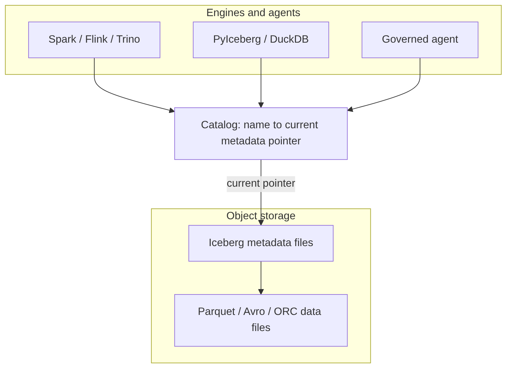
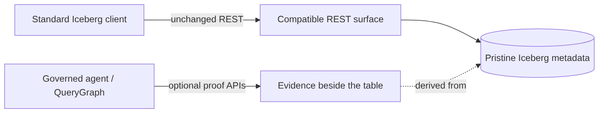

A data catalog is often described as a place that lists datasets. That is true but too small. A real catalog is the control plane between names, storage, metadata, identity, and intent. At minimum it answers four questions:
In a traditional database the catalog is embedded in the engine: one system owns table definitions, statistics, permissions, and the transaction log. A lakehouse pulls that apart. Data files live in object storage, metadata files live beside them, and several engines read and write the same tables. The catalog becomes the agreement point — it maps a logical table name to the current metadata pointer and arbitrates updates to that pointer.

That pointer is deceptively important. If the catalog points at metadata version 17, the table is version 17. If a writer prepares version 18 and wins the compare-and-swap, the table becomes 18; if it loses, nothing partially changes. The catalog is not the table format, but it is where table history becomes visible and durable. For human analytics this sounds like bookkeeping. For agentic systems it is a trust boundary: a catalog can know the principal, warehouse, namespace, table, snapshot, requested columns, row restriction, storage profile, and policy receipt — and if it captures that before planning and commits it after state changes, it becomes a governed control plane rather than a passive address book.
Apache Iceberg is a table format for large analytic tables. Its core idea is to put the table’s truth in explicit metadata files so engines can plan reads and validate writes without directory listing or fragile storage conventions. A current metadata file names schemas, partition specs, sort orders, snapshots, and properties; snapshots point to manifest lists; manifest lists point to manifests; manifests describe data and delete files.
The catalog’s role in Iceberg is intentionally narrow. Standard clients must be able to load table metadata, create namespaces and tables, commit changes, and sometimes receive credentials or scan tasks — over a documented REST shape:
GET /v1/config
GET /v1/{prefix}/namespaces
POST /v1/{prefix}/namespaces/{ns}/tables
GET /v1/{prefix}/namespaces/{ns}/tables/{table}
POST /v1/{prefix}/namespaces/{ns}/tables/{table} # commit: requirements + updatesThe rule that governs everything else in this book: a normal client must never have to call a non-standard endpoint to read an ordinary table. If it does, compatibility is already broken.
LakeCat’s promise is compatibility first, evidence second, semantics above the catalog. A Spark or PyIceberg client sees an Iceberg REST catalog. A QueryGraph or governed-agent client may ask for richer proof. Both share the same table because the portable truth stays in Iceberg metadata and the extra evidence sits beside it — never inside the table format.

Iceberg metadata stays pristine. Policy, graph, lineage, and agent state are derived control-plane or graph data. The table remains an Iceberg table.